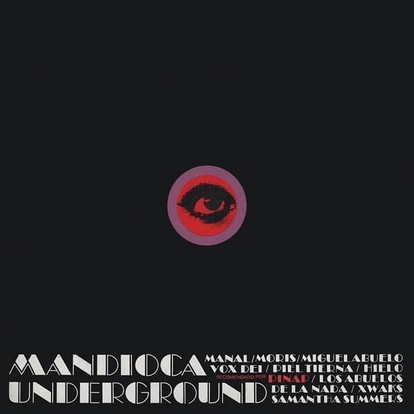

Mandioca Underground
Sello Mandioca - 1968
Este disco es más bien un compilado de distintas bandas de la época, donde se puede ver a "Manal", "Vox Dei", "Miguel Abuelo" como solista, entre otras.
Pappo participa junto a "Los Abuelos de la Nada" en el tema "La Estación"